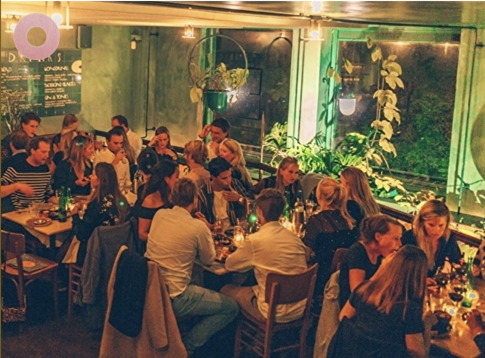
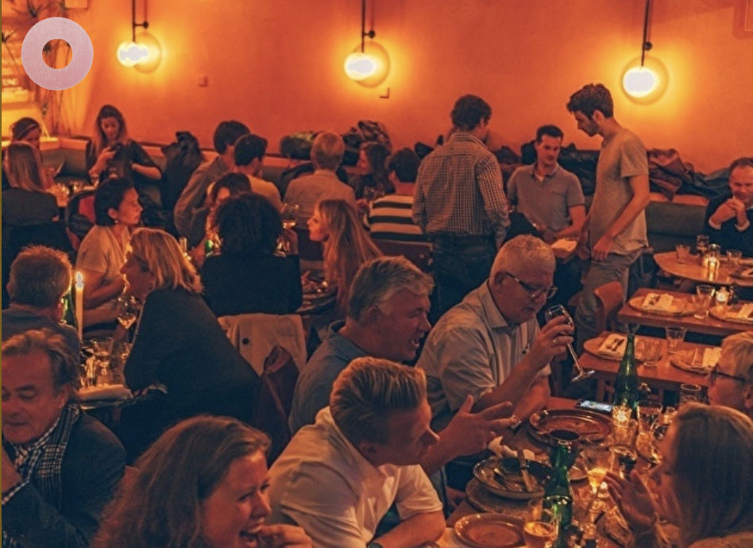
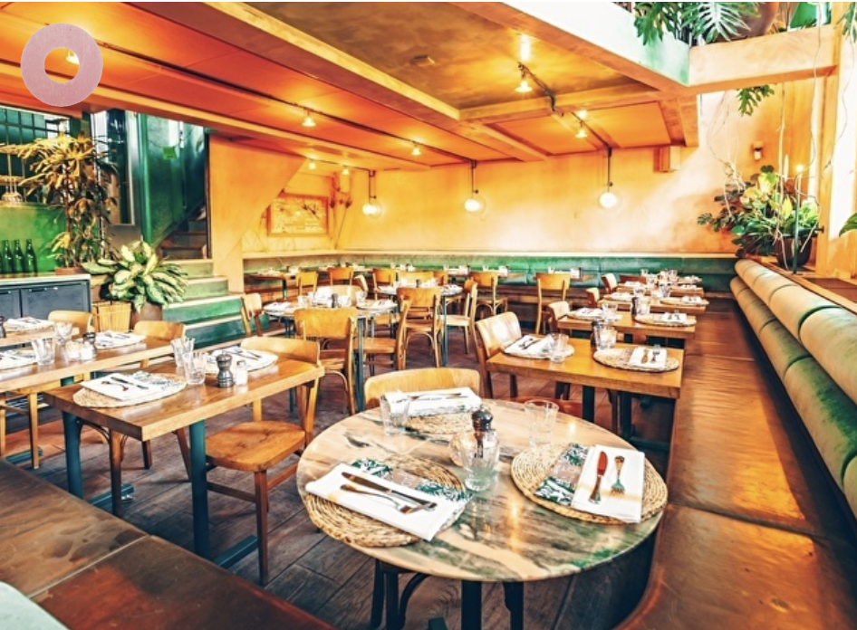
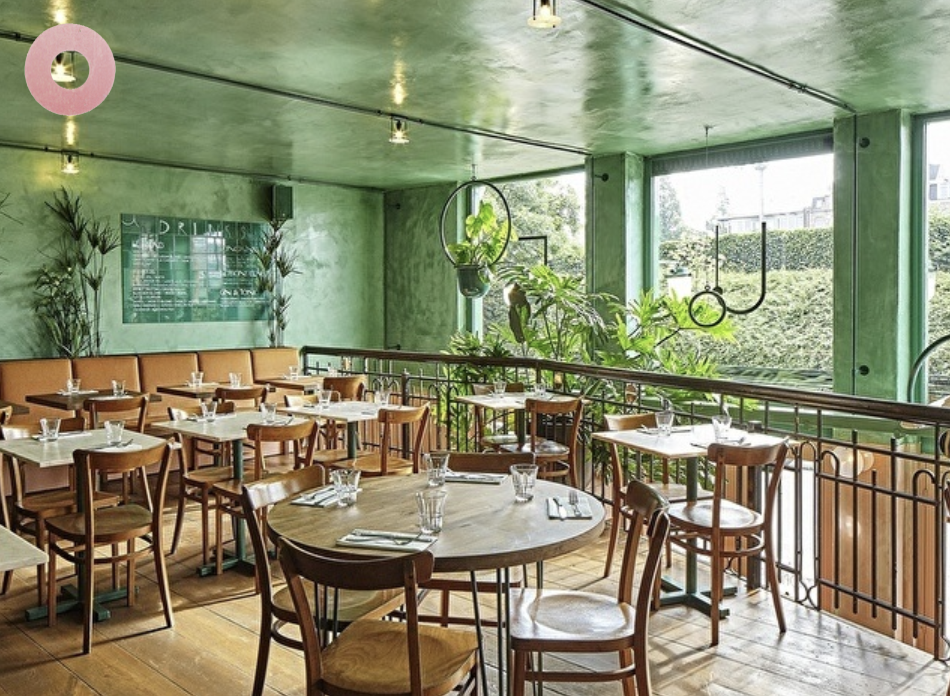
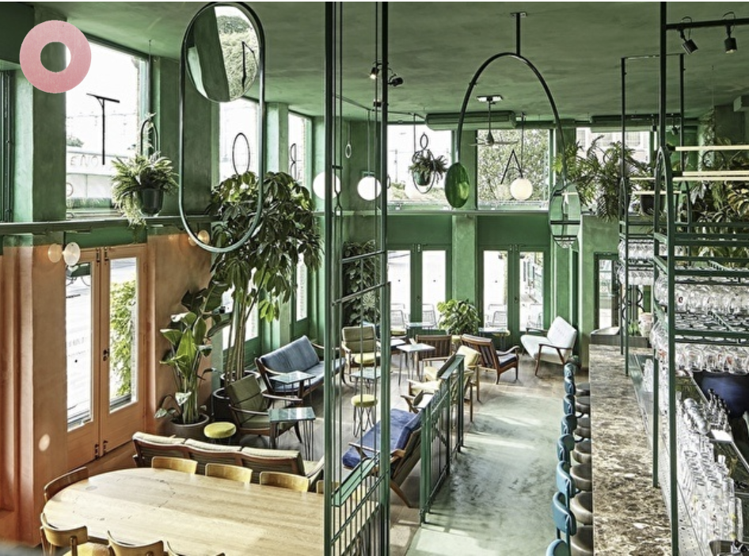

Groepslocatie in Amsterdam Oost
Als u op zoek bent naar een geschikte locatie voor een grotere groep, dan is Bar Botanique de perfecte locatie. Of het nu gaat om een diner met een grote groep, het vieren van een verjaardag of afstuderen, of een teamuitje bij Bar Botanique kan veel. Wit u meer privacy dan is dat ook mogelijk, onze vide is in z'n geheel af te huren. Voor groepen vanaf 10 personen bieden wij een speciaal groepsmenu of een 3-gangen diner aan. Ook voor de lunch hebben wij een groepsmenu of een speciaal lunch arrangement. Wij hopen jullie snel te zien bij Bar Botanique!
Private dining
Heb je iets te vieren en doe je dat graag onder het genot van een uitgebreid diner? Dat regelen wij! Bij Bar Botanique is er altijd een mogelijkheid voor private dining, hoe groot de groep ook is.
Groepsdiner
Kom uitgebreid dineren met een groep. Bar Botanique heeft meer dan genoeg ruimte voor groepsdiners met een unieke (kleurrijke) ervaring.
Zakelijk diner
Als je opzoek bent naar een geschikte locatie voor een zakelijk diner, dan is Bar Botanique de ideale plek. Onderhoud in alle sfeer je contacten en geniet van ons uitgebreide menu.
Vergaderen
Bij Bar Botanique hebben we verschillende mogelijkheden voor het hebben van een vergadering. Onze barista’s zetten met liefde de broodnodige koffie.
Productpresentatie
Maak een goede indruk en organiseer je product presentatie bij bar Botanique. Huur bijvoorbeeld onze vide af en doe ongestoord én in stijl je verhaal. Onze barista’s verzorgen de koffie.